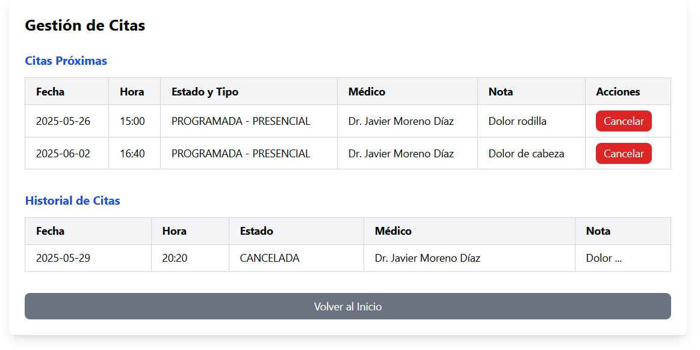

Descripción
Los usuarios pueden ver las citas próximas, el historial de citas pasadas y cancelar citas si es necesario.
Capturas de pantalla

Vista de las citas próximas y el historial de citas.
Rutas relacionadas
- Frontend: `/gestionar-citas` (Angular Router)
- Backend: `/api/citas` (Spring Boot)
Estados y transiciones
- PROGRAMADA → COMPLETADA (tarea programada por fecha pasada)
- PROGRAMADA → CANCELADA (paciente/médico según política de tiempo)
Acciones
- Filtrar por estado y rango de fechas, reprogramar si el médico lo permite
- Colores por estado en calendario para claridad visual
API y errores
- GET /api/citas?pacienteId|medicoId&estado&desde&hasta
- PUT /api/citas/{id}/cancelar → 200 | 409 fuera de plazo | 403 sin permiso